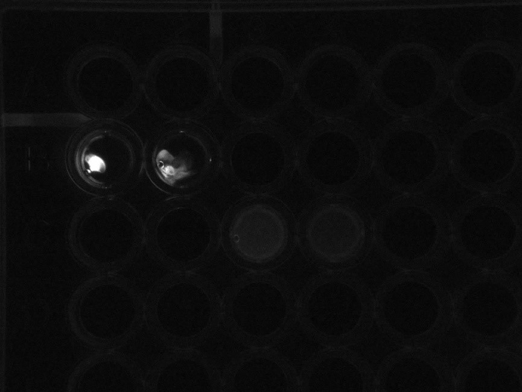
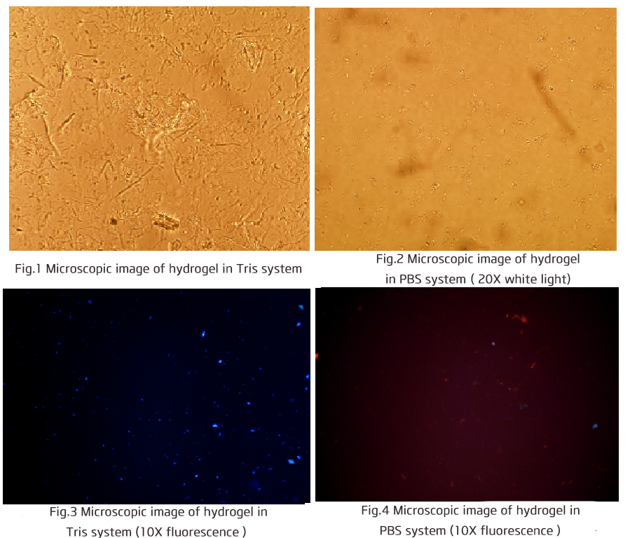

Sep 11th
Hydrogels observation
Add 1ul of 100X GelRed to the four-well, add 1 ul of 100X GelRed to the four wells, stain the hydrogels with a nucleic acid dye, and observe the hydrogels in the UV on a gel imaging analyzer.

In the upper row of holes are the hydrogels made under the original literature buffer system (Tris, pH=8), and there is obvious accumulation of fluorescent spots, which can prove that the hydrogels form. In the lower row of wells are the hydrogels made under the predicted cell system (PBS, pH = 7.4), presenting weak fluorescence, we presume that they are hydrogels microparticles.
The lower buffer system does not be supplemented the dTT and bovine serum albumin in the original liquid system, which may lead to the poor gelation effect.
Further experiments on Mg ion gradient buffers with dTT and bovine serum albumin are being performed to determine that whether hydrogels can still form in the cell environment.
The hydrogels in the Tris system are clearly cross-linked to each other, and the hydrogels in the PBS system exists only in the form of particles. Gelred should exhibit red light under the action of ultraviolet excitation light, and the blue fluorescence of the gel in the Tris system is unknown.

The hydrogels in the Tris system are clearly cross-linked to each other, and the hydrogels in the PBS system exist in the form of particles. Gelred should exhibit red light under the action of ultraviolet excitation light, and why the hydrogels exhibit blue fluorescence in the Tris system is unknown.
Sep 12th
Exploration for the right RCA system condition
1. Preparation for the reaction system solution
There are 7 groups of parallel experiments; phi29 buffer system, tris-HCl system (three groups, Mg ion concentration of 10mM, 20mM, 30mM), PBS system (three groups, the same gradient as Tris-HCl system)
Preparation for the tris-HCl system: Tris 0.455g, ammonium sulfate 0.02g, DTT 9.25mg, bovine serum albumin 3mg dissolve in ddH20 to the volume of 15ml, evenly divided it into three tubes, then respectively add 10mg,20mg and 30 mg of magnesium chloride hexahydrate, getting a reaction solution of a tris-HCl system with Mg ion concentration of 10 mM, 20 mM, and 30 mM.
Preparation for the PBS system: Dissolve a piece of Tablet in 10ml of ddH20. Add 0.02g of Ammonium sulfate, 9.25mg of DTT, 3 mg of bovine serum albumin to ddH20 to the volume of 13.5ml. Then add 1.5ml of 10XPBS. It is evenly divided into three tubes. Then respectively add 10mg, 20mg and 30 mg of magnesium chloride hexahydrate, getting a reaction solution of a tris-HCl system with Mg ion concentration of 10 mM, 20 mM, and 30 mM.
2. Preparation of hydrogels through RCA
1. Hybridization the circular template the primer:
Add 80 uL of TE solution,10 ul of circular template and 10 ul of Aptamer-Primer 1 and 1 ul of 100XGelRed per well in a 96-well plate, mix them and incubate at room temperature for 2 hours.
2. The R-Process
Add 50 ul of the above seven reaction solutions in each well, and then add 10 ul of dNTP, 0.5 ul pf φ29; mix them and incubate at 30 ° C for 40 min.
3. The M-Process
Add 1 ul of primer 2 and 3 to each well and continue to incubate at 30 ° C for 16 h.